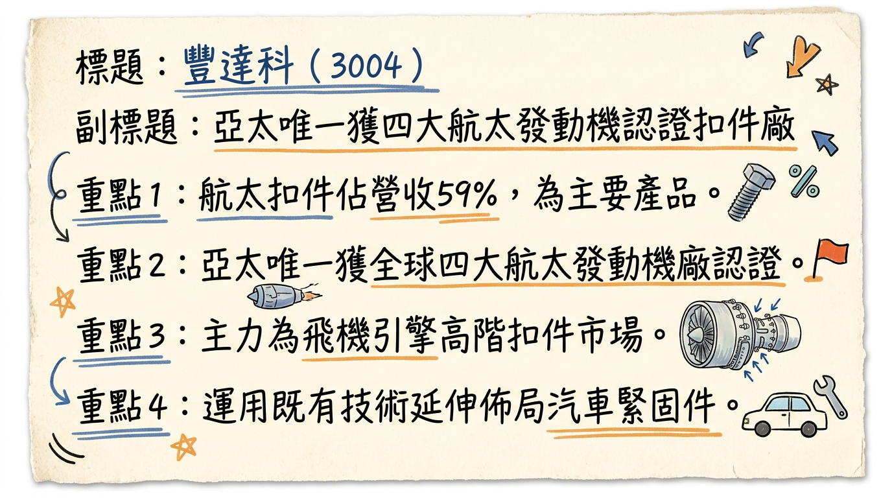
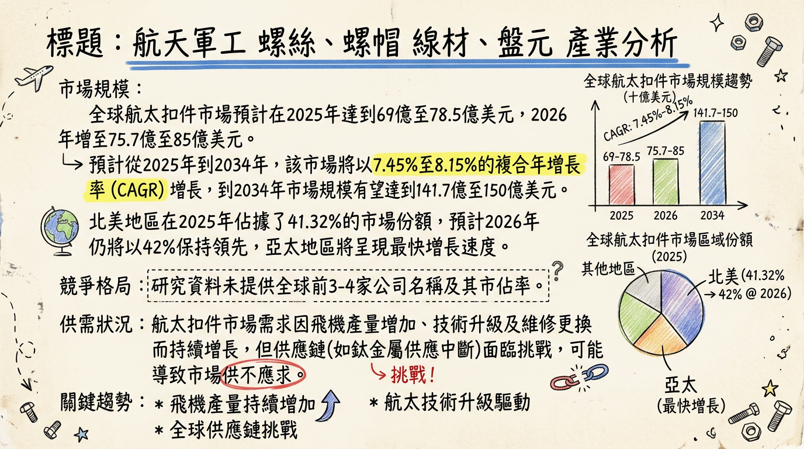
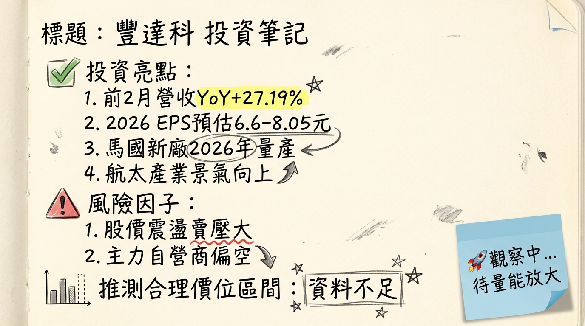

3004 豐達科 深度研究報告
一句話摘要
豐達科憑藉其在亞太地區獨家的航太發動機扣件認證優勢，受惠於全球航太產業強勁復甦、供應鏈重組及新世代引擎需求，透過馬來西亞擴廠提升產能並延伸產品線，預期2026年營收及獲利將維持雙位數成長，為長期佈局的關鍵航太供應商。
公司概覽
豐達科（NAFCO）成立於1997年，是亞太地區唯一獲得美國奇異（GE）、賽峰（Safran）、普惠（P&W）及勞斯萊斯（Rolls-Royce）全球四大航太發動機製造商認證的扣件供應商。核心業務為航太與高階工業扣件製造。
業務與產品線
- 航太扣件： 螺栓、螺帽、鉚釘等，90%應用於飛機引擎，其餘應用於機體結構、航電系統等。
- 航太車削件： 精密CNC加工件。
- 工業扣件： 供應風力發電設備、醫療機械、高端精密設備。
- 汽車緊固件： 運用既有技術延伸佈局。
公司亦提供化學處理、熱處理、無損檢測及特殊加工等服務，並具備產品設計能力。
營收結構
根據2025年前11月的產品比重數據：
| 產品類別 | 佔營收比例 (2025年前11月) |
|---|
| 航太扣件 | 59% |
| 航太車削件 | 31% |
| 工業扣件 | 10% |
製造基地
- 台灣桃園： 總部及主要生產基地。
- 中國昆山： 另一主要生產基地。
- 馬來西亞（MYN子公司）： 新廠於2025年4月啟用，專注航太與汽車相關產品。M2二期新廠已於2026年1月動土，預計2027年第四季竣工。馬來西亞廠預計2026年起貢獻營收。
台灣與中國廠區目前產能稼動率已達90%，接近滿載。
核心競爭優勢
獨家認證與技術門檻： 亞太地區唯一獲得全球四大航太發動機製造商認證的供應商，確保其在市場上的獨特地位和高進入壁壘。
全球航太產業復甦： 受惠於疫情後全球航空市場強勁復甦，新機交付與維修需求增長，為豐達科帶來穩定的訂單增長。
供應鏈重組與轉單效應： 國際客戶為降低風險而尋求多元供應商，加上競爭對手突發事件（如SPS Technologies工廠火災），使豐達科獲得急單與長期合約。
高階產品與新世代引擎： 90%航太扣件應用於飛機引擎，特別是受惠LEAP新一代飛機引擎交付量擴增，顯示其在關鍵高價值產品領域的專精。
全球化佈局與產能擴充： 馬來西亞新廠的設立，不僅擴增產能，亦有助於分散地緣政治風險，強化供應鏈韌性。
持續技術升級與智慧製造： 積極投入輕量化合金、高強度耐蝕材料等新技術研發，並落實智慧製造，提升生產效率和產品品質。
財務分析
月營收趨勢
| 月份 (年) | 金額 (億元) | 月增率 (MoM) | 年增率 (YoY) |
|---|
| 2026年2月 | 3.62 | -7.09% | +19.59% |
| 2026年1月 | 3.89 | -3.94% | +35.19% |
| 2025年12月 | 4.05 | +7.84% | +19.61% |
| 2025年11月 | 3.76 | +4.28% | +22.94% |
| 2025年10月 | 3.61 | +5.25% | +25.47% |
| 2025年9月 | 3.43 | +5.64% | +20.59% |
季度數據
| 項目 (2025年第四季) | 數據 |
|---|
| 季營收 | 11.42億元 |
| 毛利率 | 24.39% |
| 營業利益率 | 9.60% |
| EPS | 1.33元 |
年度趨勢
| 年度 | 營收 (億元) | 年增率 | EPS (元) |
|---|
| 2025 | 40.55 | +15.80% | 5.85 |
| 2024 | 35.02 | - | 6.88 |
法說會重點
- 訂單與產能： 受惠於全球航太市場強勁需求、轉單效應及LEAP新一代飛機引擎交付量擴增，帶動接單動能與產能稼動率持續攀升，台灣與中國廠區整體生產已接近90%滿載。訂單能見度已由過往平均三季拉長至一年。
- 合作與獲獎： 2025年獲得美國奇異航空（GE Aerospace）頒發「卓越供應商夥伴獎」。同年與德國MTU Aero Engines簽訂為期5年的長期供應合約，鞏固全球四大引擎製造商供應鏈地位。
- 資本支出與擴產： 豐達科持續投入資本支出，對馬來西亞子公司MYN增資1,000萬美元，以強化營運資金並支應後續擴產計畫。馬來西亞新廠於2025年4月啟用，預計2026年初正式量產並貢獻營收。2026年1月馬來西亞二期新廠（M2廠區）動土。
- 新產品導入： 2025年前11月新產品導入數達1,441個，創歷史新高，包含大量SPS轉單開發計畫。
- 價格調整： 已針對商品新約進行調價，以反映強勁需求與購料成本波動。
- 管理層展望： 對2026年營運抱持信心，法人預期隨著航太產業景氣向上及馬來西亞廠量產，營運將再攀升。
券商觀點
目前未找到2025-2026年豐達科（3004）的具體券商目標價、評等及EPS預估資料。
| 券商名稱 | 目標價 (元) | 評等 | 日期 |
|---|
| N/A | N/A | N/A | N/A |
財報深度分析
利潤率趨勢
| 季度 | 毛利率 (%) | 營業利益率 (%) | 稅後淨利率 (%) |
|---|
| 225Q1 | 28.17 | 15.22 | 11.82 |
| 2025Q2 | 24.83 | 13.88 | 6.54 |
| 2025Q3 | 20.64 | 8.51 | 7.08 |
| 2025Q4 | 24.39 | 9.60 | 7.49 |
- 2025年第三季毛利率顯著下滑至20.64%，主要受擴產初期成本（如馬來西亞新廠建置費用）增加、產品組合調整及台幣升值影響。此一表現低於法人共識。
- 2025年全年獲利下降主要歸因於匯率升值影響（2025年第二季產生匯兌損失3,878萬元）、現金增資員工認股費用，以及馬來西亞廠建廠初期相關費用認列，這些因素合計影響約9,417.3萬元。
- 2025年第四季毛利率回升至24.39%，顯示成本壓力逐步緩解，或產品組合有所優化。
存貨分析
| 項目 (年) | 存貨週轉率 (次) | 平均售貨天數 (天) | 應收帳款週轉次數 (次) | 平均收帳天數 (天) |
|---|
| 2024 | 1.67 | 218.39 | 4.51 | 80.91 |
| 2023 | 2.35 | 155.33 | 4.73 | 77.20 |
- 存貨週轉天數上升： 2024年平均售貨天數顯著高於2023年，從155.33天增加至218.39天，顯示存貨週轉速度變慢。這可能與為滿足長期訂單而增加備料、新廠初期準備或需求波動有關，需持續關注。
- 應收帳款週轉天數略增： 2024年平均收帳天數略增至80.91天，變化幅度較小。
資本支出
- 近年趨勢： 豐達科台灣與中國廠區產能利用率在2025年已達8至9成，接近滿載。為因應持續增長的訂單需求及全球供應鏈重組，公司持續進行擴產。
- 馬來西亞新廠投資： 馬來西亞新廠於2025年4月啟用，總投資金額超過4,000萬美元。2025年10月對馬來西亞子公司增資1,000萬美元，並購置8,332平方公尺土地（約新台幣5,900萬元），擴大在馬來西亞的總持有土地至3.6萬平方公尺。
- 未來計畫： 馬來西亞廠區預計2026年初正式投產並貢獻營收。其中一期預計2026年第二季正式量產，三廠預計2026年第四季末投產。馬來西亞二期擴建工程（M2廠區）預計2027年第四季完工，2028年上半年投入營運。
其他財務數據
* 2024Q1: 57.73% -> 2025Q3: 62.07%。負債比率在2025年呈現上升趨勢，可能與擴廠融資有關。
- 自由現金流量： 2024及2025年前三季自由現金流量多呈現負值，反映公司正處於積極資本支出擴張階段，投資活動的現金流出較大。
- 業外收支： 2025年業外收支對營收貢獻多為負向，主要受匯率影響。
股權異動
- 現金增資/減資： 2025年董事會通過對馬來西亞子公司增資1,000萬美元，主要用於強化營運資金並支應後續擴產計畫。
- 股利政策： 2024年度EPS為6.88元，配發現金股利2.55元，配發率約44%。
- 董監事/大股東申報轉讓、庫藏股、可轉債： 未找到2024-2026年的最新相關資料。
產業分析
市場規模與供需
全球航太扣件市場預計在2025年達到69億至78.5億美元，並在2026年成長至75.7億至85億美元。預計從2025年到2034年，該市場將以7.45%至8.15%的複合年增長率（CAGR）增長，到2034年有望達到141.7億至150億美元。其中，北美地區預計2026年仍將佔據約42%的市場份額，而亞太地區將呈現最快的增長速度。
- 供需狀況： 市場需求持續增長，主要驅動因素包括飛機生產量增加、航太技術升級以及維修與更換需求。波音和空中巴士等主要飛機製造商的產能逐步恢復，以及全球飛機機隊的老化，都穩定增加了對航太扣件的需求。儘管需求旺盛，供應鏈挑戰（如鈦金屬供應中斷、整體供應鏈瓶頸）仍存在，表明市場可能處於供不應求的狀態，尤其對高性能扣件而言。
競爭格局
| 公司名稱 | 地區優勢/認證 | 產品專精 | 客戶群 | 特點與競爭力 |
|---|
| 豐達科 (NAFCO) | 亞太地區唯一獲得GE、Safran、P&W、Rolls-Royce四大航太發動機製造商認證。 | 90%航太扣件應用於飛機引擎 | 波音、空中巴士、GE航太、賽峰集團等國際航太大廠。 | 獨家認證帶來高進入壁壘；積極擴張產能；受惠供應鏈重組轉單。 |
| Arconic (Howmet Aerospace) | 全球性 | 多元航太部件，含扣件。 | 廣泛航太客戶。 | 大型整合供應商，技術領先。 |
| Precision Castparts Corp. (PCC) | 全球性 | 專業航太金屬部件及扣件。 | 廣泛航太客戶。 | 大型供應商，規模經濟，技術實力強。 |
- 台灣同業比較： 目前未有豐達科與台灣同業（如漢翔、寶一、千附精密等）在營收規模、毛利率、EPS上的具體對比數據。不過，豐達科作為神基（3005）的轉投資事業，其航太扣件業務因疫情後需求復甦及競爭對手火災轉單效應，預估2026年業績將持續成長。
產業趨勢
輕量化與高強度耐蝕材料應用： 航空產業對燃油效率和碳排放的重視，推動了輕量化合金（如鋁合金、鈦合金）和高強度耐蝕材料的應用。航太扣件需具備更高強度重量比和耐腐蝕性，其中鋁合金預計2026年佔37%市場份額，並以9.3%最高CAGR增長。
3D列印技術在製造中的應用： 3D列印（積層製造）在航太扣件生產中應用日益增加，有助於實現複雜幾何形狀、縮短開發週期、降低成本並提升生產效率。
智慧製造與數位化品質管理： 扣件產業正從價格導向轉向技術能力、應用整合與品牌價值。導入智慧製造與數位化品質管理有助於提升產品可追溯性與一致性，以應對高階產業的嚴格要求。
對豐達科的具體機會和威脅
* 全球航空業復甦與機隊擴張，預計2025年收入和乘客數創歷史新高。
* 獨家認證地位，抓住高階航太扣件需求。
* 輕量化與新材料趨勢，技術實力可開發新型扣件。
* 轉單效應帶來額外訂單。
* 供應鏈不穩定性（如鈦金屬短缺、價格波動）。
* 地緣政治風險與貿易壁壘，可能影響國際貿易環境。
* 產業競爭加劇。
* 匯率波動（新台幣升值可能影響出口營利）。
* 馬來西亞擴產初期可能帶來短期毛利率壓力。
* 轉單效應為一次性事件，不可持續性。
* FAA對波音737MAX的產能限制可能影響交機量。
相關投資題材
- 軍工航太： 全球地緣政治緊張與民用航空市場復甦，豐達科作為航太扣件供應商直接受益於飛機製造和維修市場的增長。
- 新能源與智慧製造： 工業扣件應用於風力發電設備，與新能源相關；智慧製造投入可提升競爭力。
- 無人機與AI： 雖非主要業務，但無人機產業發展和AI在製造自動化、品質控制的應用，可能間接帶動對輕量化、高性能扣件的需求。
近期催化劑
利多事件
- 2026年2月/3月： 2026年1月營收達3.89億元，年增35.19%；2月營收達3.62億元，年增19.59%。累計前2月營收約7.51億元，年增27.19%。
- 2026年1月30日： 馬來西亞M2廠區動土，預計2027年第四季完工，2028年上半年投入營運，擴大未來產能。
- 2026年1月： 訂單能見度已由平均三季拉長至一年。新產品導入數達千餘件，創歷史新高，包含大量SPS轉單開發計畫並簽署長期合約。
- 2025年12月5日： 與德國MTU Aero Engines簽訂5年長期供應合約。獲得美國奇異航空（GE Aerospace）「卓越供應商夥伴獎」。
- 2025年12月： 2025年前11月營收年增15.39%，連月創同期或歷史新高。產能稼動率持續攀升，整體生產接近滿載。
- 2025年4月： 馬來西亞新廠啟用，預計2026年起開始貢獻營收，分散生產基地風險並提升供應韌性。
- 法人展望： 法人平均預估2026年度稅後純益有望較去年成長三成，來到4.68億元，EPS介於6.6至8.05元之間。
利空事件
- 2026年2月： 市場賣壓明顯，主力與自營商近期偏空操作（自營商近20日合計買賣超為-69張）。
- 2025年第三季： 毛利率降至20.64%，低於法人共識的28%，顯示擴產初期成本及產品組合調整帶來短期壓力。
- 匯率波動： 2025年第二季因新台幣升值產生3,878萬元匯兌損失，影響獲利。
- 供應鏈挑戰： 航太材料供給可能下滑，推升購料成本；供應鏈中斷、發動機短缺等風險仍存。
外資/投信近期買賣超 (截至2026年3月6日)
- 外資： 近20日合計買超587張；2026年至今累計買超488張。
- 投信： 近20日合計買超0張；2026年至今累計買超90張。
- 自營商： 近20日合計買賣超-69張。
⭐ 成長動能時間軸
| 成長動能 | 具體項目 | 時間點 | 說明 |
|---|
| 擴廠 | 馬來西亞廠啟用 | 2025年4月 | 總投資逾4,000萬美元，強化亞太製造戰略地位。 |
| 馬來西亞廠開始貢獻營收 | 2026年起 | 子公司MYN已完成1,000萬美元增資並購置土地。 |
| 馬來西亞一期正式量產 | 2026年第二季 | 預計帶來顯著產能增幅。 |
| 馬來西亞三廠投產 | 2026年第四季末 | 持續擴充馬來西亞產能。 |
| 馬來西亞M2廠區動土 | 2026年1月30日 | 建築面積達18,252平方公尺。 |
| 馬來西亞M2廠區完工 | 2027年第四季 | 預計屆時整體生產基地總面積將超過27,000平方公尺。 |
| 馬來西亞M2廠區投入營運 | 2028年上半年 | 將進一步提升總產能。 |
| 新客戶/市場 | 與德國MTU Aero Engines簽訂5年長期供應合約 | 2025年12月 | 進一步鞏固在全球四大引擎製造商供應鏈中的策略地位。 |
| 拓展機身用扣件業務 | 持續進行中 | 多元化產品線，擴大市場份額。 |
| 拓展汽車緊固件業務 | 持續進行中 | 運用既有技術延伸佈局，開發新市場。 |
| 產能 | 台灣/中國廠區稼動率達90% | 2025年12月 | 接近滿載，顯示需求強勁。 |
| 馬來西亞新廠預計產能提升 | 2026年起 | 分散風險，滿足區域性需求。 |
| 需求 | 訂單能見度拉長至一年 | 2026年1月 | 反映客戶需求穩定且強勁。 |
| LEAP新世代引擎量產加速 | 持續進行中 | Safran主力產品LEAP引擎2025年交付目標1,600具，在手訂單達11,543具。 |
| 波音/空巴交機數上升 | 2025年起 | 2025年空巴預計交機820架、波音610架，帶動上游扣件需求。 |
| 全球航太市場強勁復甦 | 長期趨勢 | 疫情後全球旅遊與商務活動恢復，推動新機與維修市場。 |
| 新產品導入數達1441件 | 2025年前11月 | 創歷史新高，包含SPS轉單開發計畫。 |
2026 展望
成長動能
豐達科2026年將受惠於多重成長動能，營收及獲利有望維持雙位數成長。
全球航太市場全面復甦： 隨著航空客運量恢復至疫情前水平並持續增長，新機交付量及MRO（維修、翻修與大修）市場的需求將為豐達科帶來穩定的業務增長。
馬來西亞新廠產能開出： 馬來西亞廠區將於2026年起正式貢獻營收，其中一期將於第二季量產，三廠則於第四季末投產。這將顯著提升公司整體產能，滿足日益增長的訂單需求，並降低地緣政治風險。
穩固的客戶關係與訂單： 與全球四大航太發動機製造商的長期合作，加上新簽訂的MTU Aero Engines五年合約，以及來自SPS Technologies火災的轉單效應，使公司訂單能見度已拉長至一年。新產品導入數創歷史新高，顯示產品競爭力與客戶滲透率提升。
產品價格調整效益： 針對商品新約進行調價，將有助於抵銷部分成本壓力，改善毛利率。
法人預估： 法人機構平均預估豐達科2026年度稅後純益有望較2025年成長三成，達到4.68億元，預估每股稅後盈餘（EPS）介於6.6至8.05元之間。
風險因子
短期毛利率壓力： 馬來西亞新廠擴產初期相關費用、產品組合調整及台幣升值等因素，可能導致短期毛利率承壓，影響獲利表現。
匯率波動： 新台幣兌美元匯率升值可能導致匯兌損失，影響以美元計價的出口營收和獲利。
供應鏈不穩定性： 全球供應鏈瓶頸、原物料（如鈦金屬）價格波動及短缺，可能推升購料成本並影響交期。
客戶集中度： 主要客戶為全球四大飛機引擎製造商，若單一客戶出現重大問題或訂單量大幅波動，可能對公司營運造成影響。
轉單效應的持續性： 來自SPS Technologies工廠火災的轉單屬於突發性事件，其長期貢獻程度仍需觀察。
航空產業潛在下行風險： 全球經濟成長放緩、地緣政治緊張升級、疫情捲土重來或重大飛安事件等，都可能抑制航空旅行需求，進而影響飛機製造與維修訂單。
投資結論
豐達科憑藉其在航太扣件領域的獨家國際認證及核心競爭力，在全球航太產業強勁復甦的浪潮中，展現明確的成長軌跡。公司積極的海外擴廠策略（馬來西亞廠）將有效提升產能、分散風險，並擴大市場份額，滿足日益增長的需求。儘管短期內可能面臨擴產初期成本及匯率波動帶來的毛利率壓力，但長期來看，其技術領先地位、穩定的客戶關係及拉長的訂單能見度，將支持其持續成長。
綜合考量其2026年預估EPS介於6.6至8.05元，並參考其在高階利基市場的領導地位、未來產能擴充帶來的成長潛力，以及航太產業的長期趨勢，我們給予豐達科「買進」建議。
建議目標價區間：160 - 200 元 (基於2026年預估EPS與20-25倍本益比推估)
投資理由整理：
獨特認證優勢與市場地位： 亞太唯一獲得全球四大航太發動機製造商認證，形成高進入壁壘，確保其在航太扣件市場的關鍵地位。
強勁的航太產業復甦動能： 全球航空客運量回升、新機交付與MRO需求增長，為豐達科帶來穩定的訂單增長，訂單能見度已拉長至一年。
馬來西亞擴廠挹注成長： 馬來西亞新廠預計2026年起量產並貢獻營收，分階段的擴產計畫將大幅提升公司總產能，成為未來營收獲利的主要驅動力。
轉單效應與新客戶契約： 受惠於供應鏈重組及競爭對手突發事件帶來的轉單，加上與德國MTU Aero Engines簽訂的長期供應合約，進一步鞏固其業務基礎。
長期發展潛力： 積極投入新材料、智慧製造，並逐步拓展機身扣件與汽車緊固件業務，為未來的成長開啟更多可能性。
本報告由 AI 自動產生，資料來源為公開網路資訊，僅供參考，不構成投資建議。產生時間：2026-03-09 22:08
📊 資訊卡


